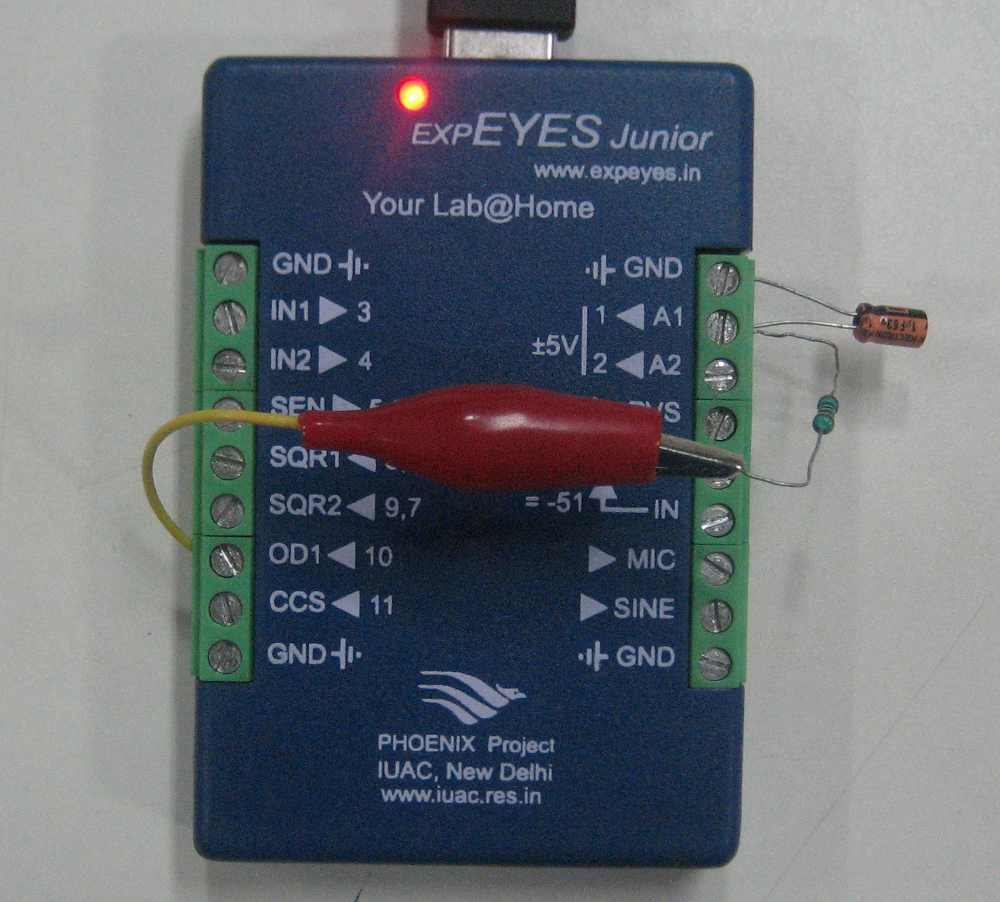
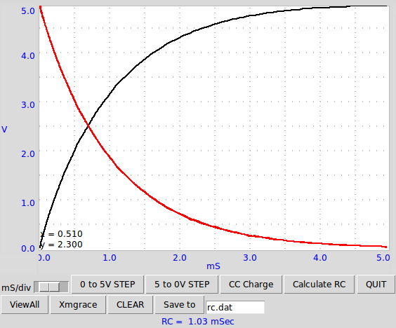
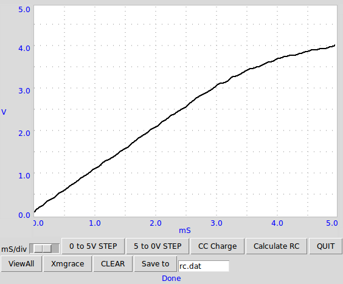

Transient response of RC circuits are studied. The voltage changes across the capacitor after applying a step voltage through a resistor is plotted. The RC time constant is calculated by fitting the discharge curve with the equation. The capacitor charging is exponential only when it is through a linear element like a resistor.
 The voltage across a capacitor changes linearly when charges through a constant current source. Connect to CCS instead of OD1 and click on CC Charge to get the output shown below. After 3 volts the graph is not linear due to the limitations of the current source.
